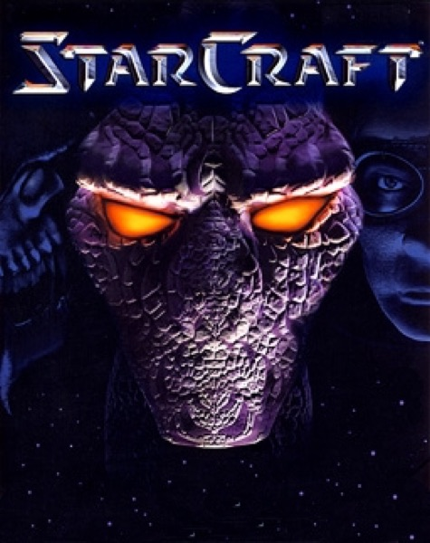

Strategy · 1998
StarCraft
Three asymmetric armies so finely balanced they became a national sport.

Cover: Wikipedia: StarCraft (video game)
Facts
- Released
- 1998-03-31
- Genre
- RTS
- Category
- Strategy
- Platforms
- Nintendo, PC
- Developers
- Blizzard Entertainment
- Publishers
- Blizzard Entertainment, Nintendo